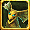
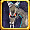
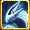

ミニペット合成スキル
基 = 基本型精 = 精霊型
自 = 自然型
神 = 神霊型
全 = 全ての系統
2 = 2次進化
- = 指定なし
| ビッグファイア | - ミニペットの火ダメージ +10％ | ||||||
|---|---|---|---|---|---|---|---|
| - | - | - | - | - | - | - | - |
| ビッグウォーター | - ミニペットの水ダメージ +10％ | ||||||
| - | - | - | - | - | - | - | - |
| ビッグストーム | - ミニペットの風ダメージ +10％ | ||||||
| - | - | - | - | - | - | - | - |
| ビッグアース | - ミニペットの大地ダメージ +10％ | ||||||
| - | - | - | - | - | - | - | - |
| ビッグライト | - ミニペットの光ダメージ +10％ | ||||||
| - | - | - | - | ||||
| - | - | - | - | - | - | - | - |
| ビッグダークネス | - ミニペットの 闇ダメージ +10％ | ||||||
| - | - | - | - | ||||
| - | - | - | - | - | - | - | - |
| レインボーエレメント | - ミニペットのダメージ +5％ | ||||||
| - | - | ||||||
| - | - | ||||||
| マッシヴファイア | - ミニペットの火ダメージ +15％ | ||||||
| マッシヴウォーター | - ミニペットの水ダメージ +15％ | ||||||
| マッシヴストーム | - ミニペットの風ダメージ +15％ | ||||||
| マッシヴアース | - ミニペットの大地ダメージ +15％ | ||||||
| マッシヴライト | - ミニペットの光ダメージ +15％ | ||||||
| マッシヴダークネス | - ミニペットの闇ダメージ +15％ | ||||||
| エンシェントエレメント | - ミニペットのダメージ +10％ | ||||||
| 太極の環 | - ミニペットのスキル発動確率 +120％ | ||||||
| ヘツルリンステップ | - 基本型ペットスキルレベル +1 | ||||||
| - | - | ||||||
| - | - | ||||||
| トゥルーエレメンタル | - ミニペットのダメージ +50％ | ||||||
| - | - | ||||||
| - | - | ||||||
| ハイポセンター | - ミニペットのボスへのダメージ +100％ | ||||||
| - | - | ||||||
| - | - | ||||||
| 古代神の残影 | - ミニペットのスキル発動確率 +150％ | ||||||
|  風神 |  闇神 | - | - | ||||
| 風神 | 闇神 | - | - | ||||
| アドバンスドリメイク 1 | - ミニペットのスキルレベル +1 | ||||||
| 風神 | 闇神 | ||||||
| アドバンスドリメイク 2 | - ミニペットのスキルレベル +1 | ||||||
| 風神 | |||||||
| アドバンスドリメイク 3 | - ミニペットのスキルレベル +1 | ||||||
| 風神 | |||||||
| アドバンスドリメイク 4 | - ミニペットのスキルレベル +1 | ||||||
| 風神 | 闇神 | ||||||
| リアルエレメンタル | - ペットのダメージ +50％ - 精霊型の補助スキルレベル +1 |
||||||
| 水精2 | - | - | |||||
| 水精2 | - | - | |||||
| 無極元素 | - 基本型ペットのスキルレベル +1 - 自然型の補助スキルレベル +1 |
||||||
| - | - | ||||||
| - | - | ||||||
| 古代神の意思 | - ペットのスキル発動確率 +150％ - 神霊型の補助スキルレベル +1 |
||||||
|  水神2 | - | - | |||||
| 水神2 | - | - | |||||
| 古代の民の宴 ? | - ペットの全スキルレベル +1 - ステータス増加スキルレベル +1 |
||||||
| 水精2 | 水神2 | ||||||
| 古代の民の宴 ? | - ペットの全スキルレベル +1 - ステータス増加スキルレベル +1 |
||||||
| 水精2 | 水神2 | ||||||
| 古代の民の宴 ? | - ペットの全スキルレベル +1 - ステータス増加スキルレベル +1 |
||||||
| 水精2 | 水神2 | ||||||
| 古代の民の宴 ? | - ペットの全スキルレベル +1 - ステータス増加スキルレベル +1 |
||||||
| 水精2 | 水神2 | ||||||
| パーフェクトエレメンタル | - ペットのダメージ +50％ - 精霊型の補助スキルレベル +2 |
||||||
| 水精2 | - | ||||||
| 水精2 | - | ||||||
| 星煌元素 | - 基本型ペットのスキルレベル +1 - 自然型の補助スキルレベル +2 |
||||||
| - | |||||||
| - | |||||||
| 古代神の現身 | - ペットのスキル発動確率 ×150％ - 神霊型主人の補助スキルレベル +2 |
||||||
| 水神2 | - | ||||||
| 水神2 | - | ||||||
| ドリームファンタジー | - ペットの物理ダメージ +10％ | ||||||
| - | - | - | - | ||||
| - | - | - | - | - | - | - | - |
| メッシブファンタジー | - ペットの物理ダメージ +20％ | ||||||
| - | - | - | - | - | - | - | - |
| 陰陽融合 | - ペットのスキル発動確率 ×150％ - 神霊型主人の補助スキルレベル +2 |
||||||
| 陰全 | 陰全 | 陰全 | 陰全 | ||||
| - | - | - | - | - | - | - | - |
| 陰陽調和 | - ペットのスキル発動確率 +150％ - 基本型ペットのスキルレベル +1 - ペットのダメージ +50％ - ペットスキルレベル +1 |
||||||
| 陰全 | 陰全 | 陰全 | 陰全 | ||||
| 陰全 | 陰全 | 陰全 | 陰全 | ||||